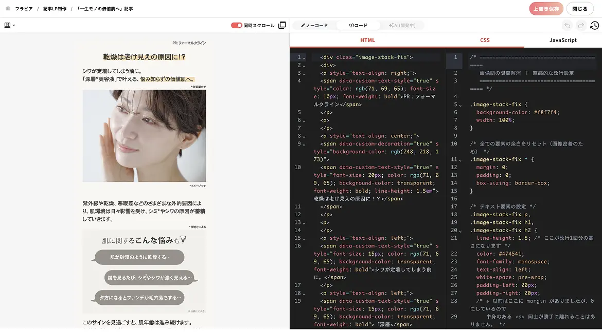
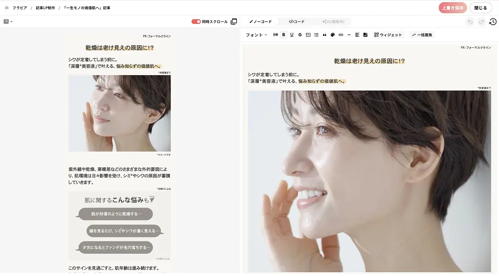
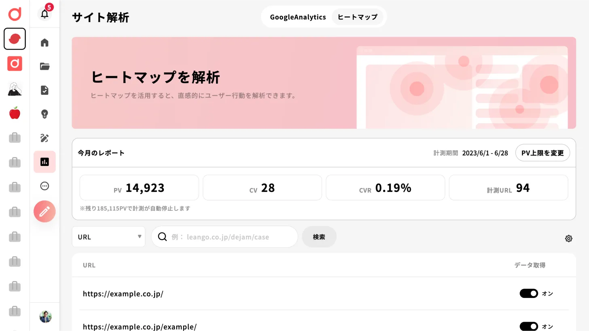
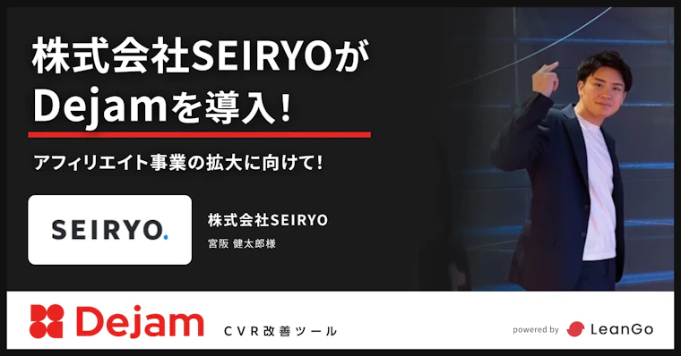
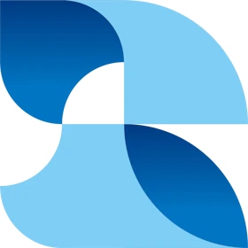
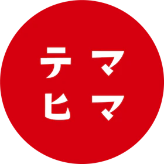

アドアフィリエイト関係者向け｜LP制作ツールの乗り換え専用ページ
使いにくいツールのまま、
まだLPを作り続けますか。
乗り換えるなら、Dejam。
記事LP・スワイプLP・アンケートLPの制作から改善までを1つで回すツールです。

公開中のLPも、そのまま移せます。移行作業はLeanGoが代行します。
※CMSプラン以上が対象です。適用条件は商談時にご説明します。
- 初期費用なし 月30,000円〜
-
人が増えても月額は同じ
ユーザー数
実質無制限 -
見積もり不要
全3プラン
金額を公開
※表示は税別の最低価格です。ユーザー数に上限はありません。月額はPV数に応じたプラン区分で決まります。
無料で乗り換えの相談をする-
3ヶ月間、無料
実際の操作感をお試しいただけます
-
相談だけでもOK
乗り換えの相談だけでも承ります
入力1分／3ヶ月無料トライアル／費用はかかりません／しつこい営業はしません
いま使っているツール、
こんな不満はありませんか。
LPの本数と回転がそのまま利益になる仕事です。アドアフィリエイト関係者の現場で、 いま使っているツールが足を引っ張っている場面を並べました。
-
01
そもそも使いにくい
テンプレが多すぎて選べない。使いこなせる人が社内に一人しかいない。 その一人が別案件に入ると、LPの制作が止まる。
-
02
思ったより費用が膨らむ
アカウント数で課金されるので、外注ライターやデザイナーに触らせる範囲を絞らざるを得ない。 結果、確認と修正の往復が増える。
-
03
回転が上がらない
案件を差し替えるたび、当たりクリエイティブを探すたびに、公開までの待ち時間で回転が落ちる。 出したい数だけLPが出せない。
-
04
判断材料が揃わない
ABテストとヒートマップが別々のツールに分かれていて、 どこで着地率が落ちているかを1画面で見られない。突き合わせるだけで時間が溶ける。
-
05
差し戻しに弱い
媒体審査で戻されるたび、修正して出し直すまでに時間がかかる。 配信エラーが起きても、原因を追いにくい。
-
06
乗り換えたいが、動けない
移行工数が読めない。公開中のLPを止めたくない。契約が残っている。 この3つで、判断が先送りになっている。

今のLP制作と改善の不満を、まとめて引き取るツール。
それが、Dejam です。
乗り換えが止まる理由は、
だいたい3つです。
-
壁 01
移行の工数が読めない
回答お客様の作業は、移す対象のLPを選ぶことだけです。移設はLeanGoが行います。
-
壁 02
公開中のLPを止めたくない
回答並行稼働で移行できます。既存LPを止めずに切り替えられます。
-
壁 03
他社ツールの契約が残っている
回答契約が残っていても始められます。いま解約いただく必要はありません。
※適用条件は商談時にご説明します。
-
3ヶ月間、無料
実際の操作感をお試しいただけます
-
相談だけでもOK
乗り換えの相談だけでも承ります
入力1分／3ヶ月無料トライアル／費用はかかりません／しつこい営業はしません
乗り換えたあと、
制作はこう変わります。
量産と回転の速さがそのまま成果に出る仕事だから、迷わず作れて、すぐ直せることを優先して設計しています。
-
制作 ─ 迷わず組める
パーツを選ぶだけで記事LP・スワイプLP・アンケートLPが組めます。 AI連携で下書きから入れるので、白紙から書き起こす時間がなくなります。
-
分析 ─ 着地率の落ちどころが見える
ヒートマップで、どこで着地率が落ちているかが見えます。 CVRへの寄与度で判断できるので、直す場所を勘で決めずに済みます。
-
改善 ─ そのままABテストへ
ABテストが同じツール内で完結します。別ツールへの行き来がないぶん、 案件の差し替えと当たりクリエイティブ探しの回転が上がります。
ユーザー数は実質無制限。外注に触らせる範囲を、費用で絞らなくていい。
料金はアカウント数ではなくPV数で決まります。外注ライターもデザイナーも運用担当も全員入れて構いません。 人を増やしても月額は変わらないので、権限を絞って現場を止める必要がなくなります。
HTMLとノーコードを行き来しながら、
AIの出力をそのまま反映。
コードとノーコードの往復が軽いので、AIで作った下書きをそのまま持ち込んで、 隣のタブで手直しして公開できます。
-
STEP 1
AIでHTMLを作る
使い慣れた生成AIで、記事LPの原稿とHTMLをまとめて出力します。

-
STEP 2
貼り付けて、隣のタブで手直しする
出力をそのままコピー＆ペースト。コードとノーコードはタブで行き来できるので、見出し・画像・CTAはそのまま直感的に直せます。

コードエディタ 
ノーコードエディタ -
STEP 3
公開する
公開後はヒートマップとABテストに直結。次の改善案がそのまま手に入ります。

乗り換えると、なくなる時間
どこを直すか相談する時間と、エンジニアの手が空くのを待つ時間がなくなります。
見積もりを待たずに、
この場で試算できます。
全プランの金額を公開しています。人数ではなくPVで決まるので、体制が増えても支払いは変わりません。
表は横にスクロールできます →
| プラン | オプティマイズ | CMS | オールインワン |
|---|---|---|---|
| 一言でいうと | 既存サイトの最適化 | 新規ページの作成 | 制作から改善まで全部 |
| 参考料金 | 月30,000円〜 | 月50,000円〜 | 月120,000円〜 |
| ユーザー数 | 実質無制限 | 実質無制限 | 実質無制限 |
| 新規LPの制作 記事LP・スワイプLP・アンケートLP |
— | ✓ | ✓ |
| 分析 ヒートマップなど |
✓ | ✓ | ✓ |
| 改善 ABテストなど |
✓ | ✓ | ✓ |
| 公開中LPの移行代行 | — | ✓ | ✓ |
人を増やしても、支払いは増えない。
料金はアカウント数ではなく、PV数に応じたプラン区分で決まります。 だから「誰に権限を渡すか」を費用で判断せずに済みます。 金額を公開していないツールから乗り換えると、来期の体制が変わっても費用の見通しが崩れません。
-
3ヶ月間、無料
実際の操作感をお試しいただけます
-
相談だけでもOK
乗り換えの相談だけでも承ります
入力1分／3ヶ月無料トライアル／費用はかかりません／しつこい営業はしません
- ※表示はすべて税別・各プランの最低価格です。ご利用状況により変動します。
- ※公開中LPの移行代行はCMSプラン以上が対象です。適用条件は商談時にご説明します。
乗り換えた方に、
決め手をうかがいました。
アドアフィリエイト事業を手がける会社での導入事例です。
-

「LPのPDCA」を、弊社の管轄下でコントロールできる
これにより、クリエイティブや記事LPだけでなく、最終LPまで一気通貫で検証サイクルを回せるようになります。 この「圧倒的な検証スピード」こそが、他社にはないナハトの競争力になると確信しています。
栗田 優磨 様 株式会社ナハト／取締役 -

ビジュアル編集とコード編集を行き来できないツールでは、うまく使えなかった
既存のツールでは「ビジュアル編集」と「コード編集」を行き来して編集できない仕様なので、うまく使えない状態でした。 また、サポートも手厚いのでバグがあった際にも安心できると考えています。
加藤 修慈 様 株式会社Senjin Holdings／取締役 -

「ついに出てきたか」という印象を受けました
この業界に長く携わっていますが、Dejamのような新しい記事LPツールはこれまでほとんど登場していなかったため、「ついに出てきたか」という印象を受けました。
宮阪 健太郎 様 株式会社SEIRYO／代表取締役
- ※Dejam公式サイトで公開中の導入事例インタビューより、発言を原文のまま引用しています（掲載許諾済み）。
- ※「乗り換えの決め手」に絞った掲載許諾付きコメントは、別途取得のうえ差し替え予定です。
機能はほぼ同じです。
差が出るのは、料金の見え方と、乗り換えのしかた。
下の6項目のうち、実際に判断を分けるのは最後の1行です。それ以外はどのツールでも似た機能が揃っています。
凡例：◎ 対応 ○ 一般的に対応 △ 公開情報なし
表は横にスクロールできます →
| 比較項目 | Dejam | 一般的な記事LP量産型ツール |
|---|---|---|
| ノーコード編集とコードの行き来 | ◎ タブで自由に行き来できる | ○ 一般的に対応 |
| 既存サイトへの導入（タグ1行） | ◎ タグ1行で導入 | ○ 一般的に対応 |
| エンジニアの要否 | ◎ エンジニアなしで運用可能 | ○ 一般的に対応 |
| ヒートマップ（CVR寄与度） | ◎ 同一ツール内で可視化 | ○ 一般的に対応 |
| ABテストの統合 | ◎ 同一ツール内で完結 | ○ 一般的に対応 |
| 移行代行 | ◎ 公開中のLPを移設 ※対象プラン・適用条件は商談時にご説明 | △ 公開情報なし |
当社は3プランの金額をすべて公開しています。金額を公開していないツールでは、問い合わせと商談を経なければ年間費用を算出できません。
乗り換えの判断に必要なのは、機能の優劣より先に、支払いがいくらになるかが今わかることです。
- ※2026年8月時点で、各社が公開している情報の範囲でまとめています。
- ※公開情報で確認できない項目は「公開情報なし」としています。優劣を断定するものではありません。
公開中のLPも、そのまま移せます。
作業はLeanGoが代行します。
他社ツールで公開中のLPの移行は、弊社が担当します。 乗り換えを決めてから運用が立ち上がるまで、手を止めずに済むよう最大限サポートします。
移行作業のほぼすべて
- 公開中LPの移設
- 計測タグの発行
- 計測の引き継ぎ
選ぶことと、確認すること
- 移行対象LPの選定
- 移設後の確認
進め方
-
対象LPをご共有
移したいLPを選んでお知らせください。作り直しは発生しません。
-
LeanGoが移設と計測引き継ぎ
Dejam上への移設、タグ発行、計測の引き継ぎまで弊社で行います。
-
並行稼働で確認後、切り替え
既存LPと並べて動かし、問題がないことを確認してから切り替えます。
対象と条件
対象はCMSプラン以上です。他社ツールの契約が残っている場合は、並行稼働のうえ、更新月に合わせた切り替えも可能です。
-
3ヶ月間、無料
実際の操作感をお試しいただけます
-
相談だけでもOK
乗り換えの相談だけでも承ります
入力1分／3ヶ月無料トライアル／費用はかかりません／しつこい営業はしません
※対象本数・所要期間・適用条件は商談時に詳しくご説明します。本ページで本数や納期をお約束するものではありません。
いま使っている機能が、
乗り換え後もあるか確認してください。
乗り換えで使えなくなるものがないかを、この表で確認してください。対応していないものも並べています。
凡例：● Dejamでの対応あり × Dejamでの対応なし
左列は一般的な操作名です。特定のツールの仕様を示すものではありません。
表は横にスクロールできます →
| 他社ツールでよく使う操作 | Dejamでの対応状況 |
|---|---|
| 既存サイトへの導入 | 対応 タグ1行で完了。DNS・ドメイン切替は不要です。 |
| 独自ドメインでの公開 | 対応 自社ドメインのままLPを公開できます。 |
| 権限管理 | 対応 外注メンバーに触らせる範囲を設定できます。 |
| ユーザーを追加したときの課金 | 追加課金なし ユーザー数は実質無制限です。人を増やしても月額は変わりません。 |
| データのエクスポート | 対応 計測データを書き出して社内共有できます。 |
| 記事LP・スワイプLP・アンケートLPの制作 | 対応 |
| ABテスト | 対応 |
| ヒートマップ | 対応 |
| MCP連携 | 未対応 必須要件の場合は、お申し込み前にご相談ください。 |
| 媒体とのホストバック連携 | 未対応 必須要件の場合は、お申し込み前にご相談ください。 |
- ※【要確認】MCP連携・媒体とのホストバック連携の対応状況は、LeanGo様への確認結果に合わせて更新します。
乗り換えの判断材料として、
数字と実績を出します。
-
90%以上
コンサルティングでの
CVR改善成功率【仮】自社調べ。算定根拠・母集団・調査時点の確認待ち
-
12.5%
上場している
広告業界企業への導入率【仮】自社調べ。算定根拠・母集団・調査時点の確認待ち
-
ISMS
情報セキュリティマネジメント
システム認証【仮】認証番号・取得範囲の確認待ち
導入企業の成果

株式会社Strato Rise／代表取締役 伊藤 涼 様
かゆいところまで手が届く分析ができる
その点、Dejamはそうした悩みを感じさせないほど分析機能が充実しており、かゆいところまで手が届く分析ができます。
LP改善には、細部まで定量的に分析しながら改善サイクルを回していくことが欠かせません。その環境を実現できるのがDejamだと思います。
【仮】CPA・CVRの改善幅を記載（数値の確認待ち）
 株式会社Xross Guild／代表取締役 内田 拓 様
重要なのは、配信後にどう分析し、改善を重ねていくか
株式会社Xross Guild／代表取締役 内田 拓 様
重要なのは、配信後にどう分析し、改善を重ねていくか
形を作るだけでは広告効果は上がりません。本当に重要なのは、配信後にどのように分析し、改善を重ねていくかだと思っています。
成果につながる正しいPDCAを回したい企業は、ぜひDejamをおすすめします。
【仮】改善サイクルの回転数・成果数値を記載（数値の確認待ち）

株式会社テマヒマ／代表取締役 平岡 大輔 様
1つの機能を使いこなすだけでも価値のあるツール
多くのツールが機能追加によって使い勝手が悪くなっていきます。
ですが、まずは1つの機能を使いこなすだけでも価値のあるツールだと感じています。
【仮】LPO代行案件での成果数値を記載（数値の確認待ち）
導入企業
※【要確認】掲載可否が取れている企業のみ掲載しています。最新のロゴ一式をご共有いただき次第、差し替えます。
よくあるご質問
他社ツールの契約が残っていても、始められますか？
はい。既存ツールとDejamを並行して動かせますので、いま解約いただく必要はありません。更新月に合わせて切り替えられます。
移行代行はどこまで対応してもらえますか？対象プランを教えてください。
対象はCMSプラン以上です。公開中LPの移設・計測タグの発行・計測の引き継ぎを弊社で担当します。お客様には移行対象LPの選定と、移設後のご確認をお願いします。【仮】対象本数の上限・所要期間は確認中のため、商談時にご説明します。
いま公開しているLPは、そのまま残りますか？
残ります。移行作業中も既存LPは公開したままで進められますので、配信を止める必要はありません。
計測は途切れませんか？
計測タグの発行と引き継ぎ方法は弊社でご案内します。切り替えのタイミングを含めて、データが途切れないよう設計してから進めます。
現時点で対応していない機能はありますか？
MCP連携と、媒体とのホストバック連携には対応していません。これらが必須要件の場合は、お申し込み前にご相談ください。【仮】対応状況は確認中のため、確定後に更新します。
解約したいときの条件を教えてください。
【仮】解約の申し出期限と、解約時に移設したLPがどうなるかを記載します（条件の確定待ち）。
セキュリティ審査に対応できますか？
【仮】ISMS認証の取得範囲・認証番号、およびセキュリティチェックシートへの対応可否を記載します（確認待ち）。
使いにくいツールのまま作り続けるか、
公開中のLPごと移すか。
アドアフィリエイト関係者のための、乗り換え相談窓口です。
- 公開中のLPはそのまま移せます
- 移設と計測引き継ぎはLeanGoが代行します
- 他社ツールの契約が残っていても始められます
【要確認】送信先が未接続です。公開前にフォームの送信先とCVタグを設定します。
送信後の流れ
- フォーム送信（入力1分）
- 1営業日以内に担当よりご連絡
- 移行対象LPをうかがい、3ヶ月無料トライアルを開始
入力1分／3ヶ月無料トライアル／費用はかかりません／しつこい営業はしません